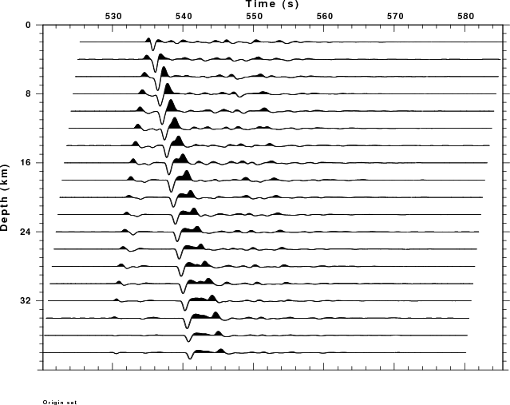

Introduction
When studying earthquakes, an interesting figure often appearing in
scientific papers is a set of traces that show the effect of effect of
source depth on the observed initial P-wave arrival. This example
provides the scripts to make such a plot. however this example
does not compare the synthetics to an observed waveform, often obtained
from an array stack.
The Script
Results
The figure created by the script is the following.
